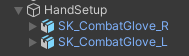
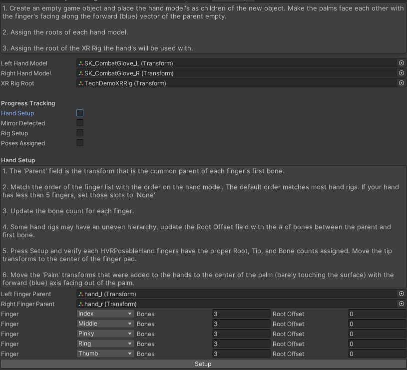
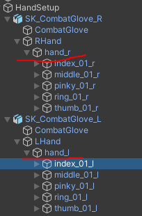
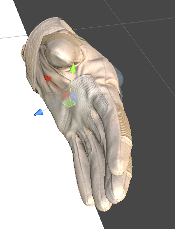
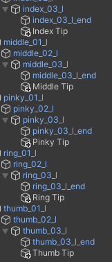
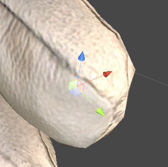
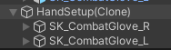
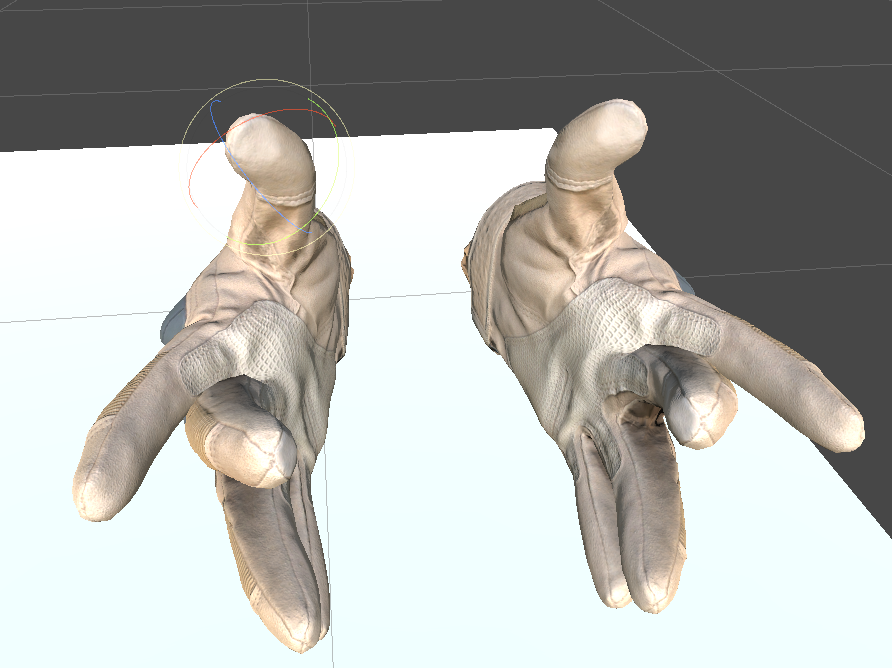
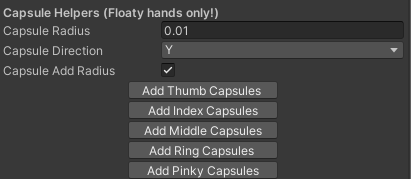
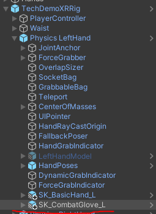

Custom Hand Setup
To use your own hand models, you will want to make sure that you have a pair of hands where one was mirrored from the other in the 3d modeling program. This will allow the hand to be mirrored rapidly in the hand poser editor.
If you have a single hand model you can follow this guide created by a fellow community user to created the second hand.
Hand Setup Wizard
If you have a set of hands that are mirrorable, you can make use of the hand setup wizard which automates a majority of the component and field setup.

- Place the hand's as a child of the same object, making sure the fingers are pointing along the forward (blue) axis of the parent object.


- Assign the hand root transforms.
- Assign the Rig root that these hands will attach to. Any included rig will work, including the HexaBody integration rigs.

- Most models (should) have a common parent transform of the finger bones. Locate this and assign as in the image above.

The standard order for finger bones are Index, Middle, Pinky, Ring, Thumb. If your model does not follow this order, adjust the order using the drop downs.
Assign the number of bones that each finger has.
If there are non bone transforms between the assigned "Finger Parent" and the first bone of the finger, increase the "Root Offset" count for each of these.
- This most likely won't be the case unless the hand designer is doing some weird stuff..
After all fields are assigned, press Setup.
Upon pressing Setup, a new transform named "Palm" is added to each hand. Place it in the center of the palm just on the surface of the mesh with the forward axis facing out at a 90 degree angle from the palm surface as in the image below. Make sure to do this for both hands.

- Take note of the Tip transforms added to each end bone.

- Move each Tip transform to the center of the last bone as in the below image.

- At this point your editor should look like the below image. The progress tracker simply controls what view is currently seen. If you need to go back and redo a previous step simply uncheck the boxes from bottom to top.
- The hands should still be oriented facing forward on their dummy game object. Press Detect Mirror. This will snapshot the forward and up vectors of each bone for pose mirroring.
- After pressing Detect Mirror the option to "Start Mirroring" presents itself. This will let you test the mirroring of the hand bones.

- Pressing Mirror Test will clone the hands. Test mirroring by moving the Right Hand root, and the right hand bones. The left bone should mirror and match.
- If mirroring for the thumbs failed, uncheck 'Mirror Detected', force the thumbs to align more closely with the forward vector of the dummy parent object, and try detecting mirror again. 
 17. Once satisfied the mirroring is working, press Stop Mirroring. Then press 'Setup Rig References': this will replace the rig references to the components added to the new hands for you. The below screen will present itself.

- Press 'Auto Setup Prefab / HVR Settings. This will create prefabs of the hand models in the root folder of the project (after the entire process is done feel free to relocate them), and update the HVRSettings scriptable object with the hand prefabs which is required for the posing system. If you locate your HVRSettings (search HVRSettings in the project search bar) you should now see the below fields populated. The prefabs are named the same as the hand model root's game object name.
- While in HVRSettings you can choose a folder in your project for pose saving by pressing 'Chose Poses Directory' at the bottom of the inspector.

- Press 'Create Hand Poser'. This will create a new game object with a HVRHandPoser component on it. Choose either hand and enable the preview for it in the hand poser editor. Proceed to create three poses:
- Relaxed Pose: How the hand will look when you are not holding anything
- Fist Pose: Used by the hand animator when not holding anything and driven via capacitive finger curls. Also used by the dynamic poser.
- Open Pose: Used by the dynamic poser as the starting pose that interpolates towards the fist pose. A wide opened hand works best here.
- The posing and save process is the same as outlined in this tutorial video : Hand Posing Tutorial.
- After the poses are created, assign them in their respective fields and press 'Setup Poses'
- The wizard will apply the pose field overrides automatically to the prefab objects in v2.8.6 and higher. In v2.8.5 and below you will need to apply the pending prefab overrides on the hand model prefabs.

- At this point you will want to add colliders to your hand models, how you do this is up to you. There are some capsule collider helper buttons on the HVRPosableHand component located on the hand root. It will try and fit them based on the bone structure, but might need some massaging after adding.

- The final step is to set the default position and rotation of the hand. Locate the hands on the physic hand objects. They were placed there by the setup process. You can use the existing rig hand as a guide. Afterwards I suggest going into play mode and placing the hand how you want it, copying the transform values out of play mode and back into edit mode. Once done you can remove the old hand model from the rig.
